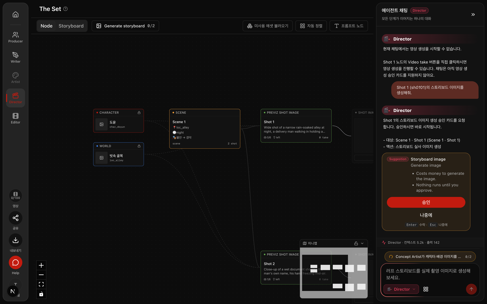
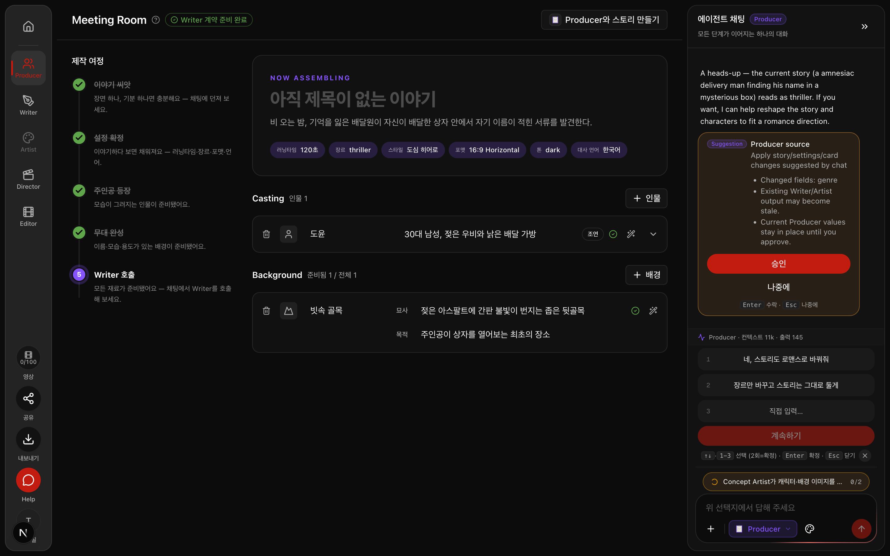

그룹 B · 채팅 → 실행 연결 · 마감 실측 · 2026-08-31
지난 보고서(08-28)가 "아직 모른다"고 남겼던 것들 — 무료 수정이 즉시 되는지, 의도를 얼마나 빗나가는지, 각 화면의 승인 카드가 실제로 뜨는지 — 를 전부 실제 화면에서 확인했습니다. 확인 중에 채팅으로 대사를 고치면 연기 지시(감정·전달 방식)가 통째로 지워지는 결함을 발견해 원인 세 겹을 고치고 다시 확인했습니다. 전부 main에 커밋되어 있습니다.
지출 — 유료 이미지·영상 생성 0건. 채팅 언어모델 호출 11회(소액). 테스트 계정의 확인용 프로젝트만 사용, 실제 작업 프로젝트는 건드리지 않음.
없습니다. 그룹 B는 이 실측으로 닫힙니다. 다음 작업(그룹 D — 채팅 가이드·수다 9건)의 브랜치 전략 제안은 별도로 전달했습니다.
| 상위 설계 논의 | 발밑에 깔려 있던 사실 전제 | 실제 한 일 |
|---|---|---|
| 무료 수정은 즉시, 유료 생성은 승인 카드 (08-27 확정 규칙) | 규칙이 코드에 박혔지만 Director 무료 수정·Writer 수정은 화면 실측이 없었다 | 화면에서 무료 수정 7건 즉시 적용 확인, 생성 요청 2건 카드 정지 확인 |
| 의도 추정이 틀려도 돈 나가기 전에 멈춘다 (하이브리드 결정) | "얼마나 자주 빗나가는지" 측정한 적이 없었다 | 발화 11종 기준선 측정 — 11/11 정분류 (표본이 작아 기준선일 뿐) |
| 실행 불가능한 요청엔 거짓 수락 금지 (08-28 수리) | 영상 요청 거절 문구는 코드로만 확인된 상태였다 | 화면에서 "채팅에서는 영상 생성을 시작할 수 없습니다" + 대안 안내 확인 |
| 채팅 한 턴 = 영수증 하나 (계측 설계) | Producer의 승인 카드 경로만 영수증에 거짓("적용됨")으로 남고 있었다 | 배선 수리 후 화면 실측 — 승인 대기 → 거절 → 건너뜀이 그대로 찍힘 |
설계 판단 자체(규칙이 옳은가)는 실행하지 않았습니다 — 그건 이미 오너가 08-27에 정했습니다.
테스트 계정의 확인용 프로젝트(씬 1개·샷 2개, "비 오는 골목의 배달원 도윤" 이야기)를 썼습니다. 이 프로젝트는 화면 확인용으로 만들어둔 것이라 실제 작업물이 아니고, 값을 바꿔도 잃는 것이 없습니다. 대화는 브라우저에서 실제 채팅창에 입력했고, 결과는 화면과 운영 데이터베이스 양쪽에서 대조했습니다.
중요한 전제 하나 — 개발 서버 포트 3000에는 다른 작업 브랜치(Director 노드 배선)가 떠 있었습니다. 거기서 재면 엉뚱한 코드를 재는 것이라, main 코드로 포트 3100에 서버를 따로 띄워 쟀습니다.
입력은 채팅창에 넣은 문장 그대로입니다. "적용"은 화면 반응과 데이터베이스 값 변화를 둘 다 확인한 것만 적었습니다.
| 화면 | 보낸 문장 (원문 그대로) | 일어난 일 | 판정 |
|---|---|---|---|
| Director | "Shot 2 (sh_01_02)의 카메라 vertical 값을 정확히 3으로 변경해줘. 영상이나 이미지 생성은 하지 마." | 즉시 적용. DB의 카메라 수직값 0→3. 영수증: 적용 1건 | 즉시 적용 |
| Director | "Shot 1 분위기가 너무 밝은 것 같아. 더 어둡고 무거운 느낌이었으면 좋겠어." | 멋대로 실행하지 않고 조명 조정안(밝기·색온도·방향)을 제시한 뒤 되물음. "이미지 재생성은 하지 않고 값만 변경합니다" 명시 | 되물음 |
| Director | "Shot 1 (sh_01_01) 영상을 생성해줘." | "현재 채팅에서는 영상 생성을 시작할 수 없습니다. Video take 버튼을 직접 클릭하시면…" — 거짓 수락 없음 | 정직 거절 |
| Director | "Shot 1 (sh_01_01)의 스토리보드 이미지를 생성해줘." | 승인 카드 표시("비용 발생·승인 전 실행 없음"). "나중에" 클릭 → 영수증이 건너뜀으로 마감. 생성 0건 | 카드 정지 |
| Director | "Shot 2에서 도윤 손이 떨리는 게 보였으면 좋겠어. 그리고 마지막에 카메라가 살짝 흔들렸으면." (과거 오분류 사고의 원문 유형) | 영상을 만들려 들지 않고 무료 수정 2건 적용 — 카메라 흔들림값 DB 반영, 프롬프트 보강은 캔버스에 반영(아래 정직 보고 참조) | 즉시 적용 |
| Writer | "Scene 1 Shot 2의 대사를 정확히 "왜… 내 이름이 여기 있어."로 바꿔줘. 감정과 전달 방식은 유지하고, 이미지나 영상 생성은 하지 마." | 대사 문장은 정확히 교체됐지만 감정·전달 방식·길이 힌트가 지워짐 → 결함 발견 (5절) | 결함 발견 |
| Producer | "장르를 액션 스릴러로 바꿔줘." | 비어 있던 세부 장르 칸에 "action"을 채움 — 빈 칸 채우기는 즉시 반영 규칙대로 카드 없이 적용. 기존 장르는 유지 | 즉시 적용 |
| Producer | "장르를 로맨스로 완전히 바꿔줘. 기존 스릴러는 버려." | 기존 값 덮어쓰기 → 승인 카드 표시("승인 전에는 현재 값 유지"). "나중에" 클릭 → 기존 장르 그대로. 영수증: 승인 대기 → 건너뜀 | 카드 정지 |
| Writer ×3 | 대사 교체 재시도 3회 (수리 단계별 재검증 — "이건… 내 이름이잖아." → "내 이름이… 왜 여기에." → "내 이름… 이게 왜 여기 적혀 있어.") | 1·2차는 여전히 유실(수리가 아직 화면에 안 실린 상태), 3차(수리 완성 후)는 문장 교체 + 감정·전달 방식·길이 힌트 전부 유지 | 수리 확인 |
의도 분류 기준선: 11/11 정분류. 표본이 작으니 "이제 안 틀린다"가 아니라 "새 지시문 배포 후 첫 기준선"으로 읽어야 합니다.

Director 이미지 생성 승인 카드 (승인하지 않고 닫음 — 과금 0)

Producer 원천 변경 승인 카드 (장르 덮어쓰기가 카드에 걸린 장면)
맥락. Writer 수정 실측 중, 대사 문장만 바꿨는데 그 대사에 붙어 있던 감정("경악")·전달 방식("숨을 삼키며 낮게")·길이 힌트(2초)가 데이터베이스에서 사라졌습니다. 이 값들은 영상 생성 프롬프트의 대사 절(그룹 G에서 8-27에 배선한 립싱크·연기 지시)이 그대로 가져다 쓰는 재료입니다. 지워진 채 영상을 만들면 "어떻게 말하는지"를 모델이 모릅니다.
가설. 원인 후보 세 겹 — ① 모델에게 보여주는 대본 요약이 대사 문장만 보여줘서 모델이 나머지 필드의 존재를 모른다, ② 지시문의 예시 자체가 "화자+문장" 2개 필드만 재제출하도록 가르친다, ③ 모델이 필드를 다 보내도 서버의 검증 단계가 화자+문장 외 전부를 버린다.
확인. 단계별로 고치고 매번 같은 실측을 반복했습니다. ①만 고치면 → 여전히 유실. ②까지 고치면 → 여전히 유실. 코드를 읽어 ③을 확인하니 검증 함수가 실제로 화자+문장만 남기고 있었습니다. ③까지 고치고 화면을 새로고침(수정 전 화면 코드가 브라우저에 남아 있었음)한 뒤 → 문장 교체 + 세 필드 전부 유지.
결과. 세 겹 전부 수리해 커밋했습니다. 유지 규칙은 자동 시험으로 잠갔습니다(정상 필드는 통과, 정체불명 필드·불량 값은 여전히 차단).
수리 전 대사 수정 후: {"text":"…","characterId":"char_doyun"} ← 감정·전달·길이 증발
수리 후 대사 수정 후: {"text":"…","emotion":"경악","delivery":"숨을 삼키며 낮게",
"characterId":"char_doyun","durationHint":2} ← 전부 유지
커밋 4c8c1fb — 대본 요약 직렬화 · 채팅 지시문 예시 · 검증 함수 세 곳
Producer 채팅이 승인 카드를 띄우는 경우, 내부 영수증에는 무조건 "적용 1건"으로 적히고 있었습니다 — 승인 전인데도. 이제 실제 결과대로 적힙니다: 즉시 적용이면 "적용", 카드로 갔으면 "승인 대기", 카드 자리가 이미 차 있어 보류됐으면 "건너뜀". 위 4절의 "로맨스" 실측에서 승인 대기 → (거절) → 건너뜀이 데이터베이스에 그대로 찍히는 것까지 확인했습니다.
커밋 05c20f8 — 승인/거절이 같은 영수증에 이어지도록 제안에 영수증 번호를 실음